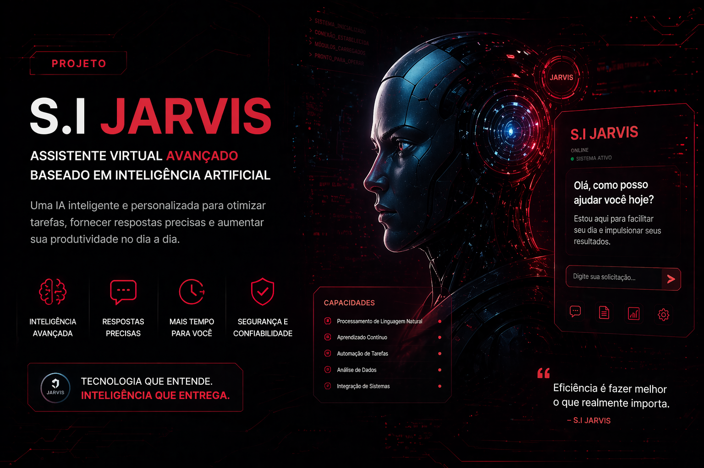
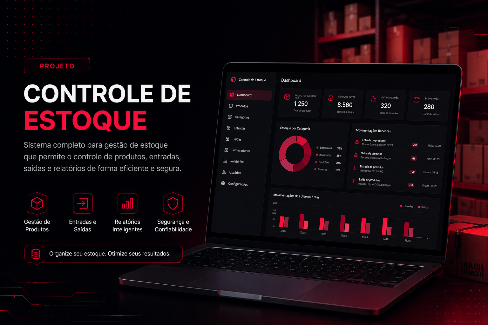
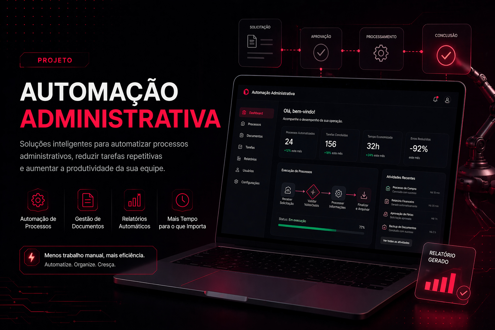

Projetos.
Projetos desenvolvidos com foco em aprendizado, prática e soluções reais.
Projetos em Destaque

S.I. JARVIS
Assistente virtual avançado baseado em Inteligência Artificial, capaz de processar comandos de voz e automatizar interações no Windows.
Portfólio Profissional
Desenvolvimento deste ecossistema web moderno, utilizando técnicas de Glassmorphism, animações AOS e design responsivo de elite.

Controle de Estoque
Sistema completo para gestão de entrada e saída de materiais, com geração de relatórios e interface intuitiva para o usuário.

Automação com IA
Scripts inteligentes que utilizam modelos de linguagem para processar documentos e automatizar tarefas repetitivas de escritório.
Outros Projetos
Dashboard de Dados
Visualização dinâmica de métricas administrativas.
Sistema de Agendamento
Interface para marcação de treinamentos corporativos.
Manutenção de TI
Guia técnico e registro de manutenções de hardware.
Sistema de Login
Módulo de segurança com validação e criptografia.
Landing Page Comercial
Página de alta conversão para serviços de consultoria.
Gestor de Arquivos
Script para organização automática de pastas.